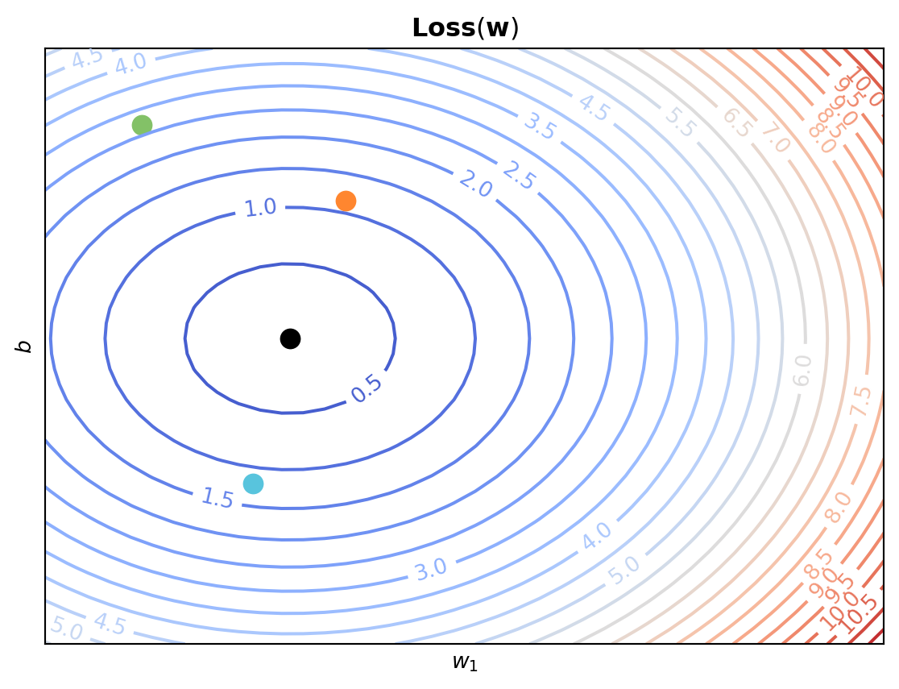

Manim Community v0.18.0
Lecture 2: Linear regression
Linear regression
Functions revisited
In the previous lecture we reviewed the concept of a function, which is a mapping from a set of possible inputs to a corresponding set of outputs. Here we’ll consider functions with vector inputs and scalar outputs.
\[ y=f(\mathbf{x}), \quad \text{Input: } \mathbf{x} \in\mathbb{R}^n \longrightarrow \text{ Output: }y \in\mathbb{R} \]
Mathematically, we can easily definite a function using a sequence of basic operations.

This function gives us the relationship between inputs \(\mathbf{x}\) and outputs \(f(\mathbf{x})\). That is, for any given input \(x\), we can find the corresponding output \(y\) by applying our function \(f(\mathbf{x})\).
Linear Functions
A linear function is any function \(f\) where the following conditions always hold: \[ f(\mathbf{x} + \mathbf{y}) =f(\mathbf{x}) + f(\mathbf{y})\] and \[ f(a\mathbf{x}) = a f(\mathbf{x})\]For a linear function, the output can be defined as a weighted sum of the inputs. In other words a linear function of a vector can always be written as:
\[ f(\mathbf{x}) = \sum_{i=1}^n x_iw_i \]
We can add an offset \(b\) to create an affine function:
\[ f(\mathbf{x}) = \sum_{i=1}^n x_iw_i +b \]
We can also write this using a dot-product between our input \(\mathbf{x}\) and parameter vector \(\mathbf{w}\) as:
\[ f(\mathbf{x}) = \mathbf{x} \cdot \mathbf{w} + b \quad \text{or} \quad f(\mathbf{x}) = \mathbf{x}^T \mathbf{w} + b \]
In one dimension, a linear (or affine) function is always a line, for example:

In higher dimensions, it is a plane or hyperplane:

In numpy we can easily write a function of this form:
def f(x):
w = np.array([-0.6, -0.2])
b = -1
return np.dot(x, w) + bParameterized Functions
Linear and affine functions are examples of classes of functions, they define a general form for many different functions. Using the affine example, we see that we can define a particular function by choosing values for \(w_i\) and \(b\).
\[ f(\mathbf{x}) = \sum_{i=1}^n x_iw_i +b \]
We will refer to the values that define a function within our class (e.g. \(w_i\) and \(b\)) as the parameters of the function, by changing these values, we can change the function.
We typically refer to \(\mathbf{w}\) specifically as the weight vector (or weights) and \(b\) as the bias. To summarize:
\[ \textbf{Affine function: }f(\mathbf{x}) = \mathbf{x}^T\mathbf{w}+b,\quad \textbf{Parameters:}\quad \big(\text{Weights: } \mathbf{w},\ \text{Bias: } b \big) \]
Handling bias compactly
Notationally, it can be tedious to always write the bias term. A common approach to compactly describing linear or affine functions is to use augmented inputs and weights, such that for \(\mathbf{x}\) and \(\mathbf{w}\in \mathbb{R}^n\), we add \(x_{n+1}=1\) and \(w_{n+1}=b\). So:
\[ \mathbf{x} = \begin{bmatrix} x_1 \\ x_2 \\ \vdots \\ x_n \end{bmatrix} \longrightarrow \mathbf{x}_{aug}= \begin{bmatrix} x_1 \\ x_2 \\ \vdots \\ x_n \\ 1 \end{bmatrix} \quad \text{and} \quad \mathbf{w} = \begin{bmatrix} w_1 \\ w_2 \\ \vdots \\ w_n \end{bmatrix} \longrightarrow \mathbf{w}_{aug}= \begin{bmatrix} w_1 \\ w_2 \\ \vdots \\ w_n \\ b \end{bmatrix} \]
We can easily see then that using this notation:
\[ f(\mathbf{x}) = \mathbf{x}^T \mathbf{w} +b = \mathbf{x}_{aug}^T \mathbf{w}_{aug} \]
This approach is common enough that we typically won’t bother with the \(aug\) notation and just assume that any function defined as \(f(\mathbf{x})=\mathbf{x}^T\mathbf{w}\) can be defined to include a bias implicitly. Note that in this case the function is a linear function of the augmented input, thus we will still typically refer to functions of this form as linear functions.
In numpy this is similarly straightforward:
def f(x):
w = np.array([-0.6, -0.2, -1])
x = np.pad(x, ((0,1),), constant_values=1)
return np.dot(x, w)Datasets and observations
In the real-world we often have access to inputs and outputs in the form of data, but not to an actual function that we can evaluate.
Specifically we will say that we have access to a dataset \(\mathcal{D}\) made up of \(N\) pairs of inputs ( \(\mathbf{x}\) ) and outputs ( \(y\) ):
\[ \mathcal{D} = \{ (\mathbf{x}_1, y_1),\ (\mathbf{x}_2, y_2),\ ...\ (\mathbf{x}_N, y_N)\} \]
We call each of these pairs an observation. Let’s take a look at a real world example of a dataset.
Fuel efficiency
Let’s imagine we’re designing a car and we would like to know what the fuel efficiency of the car we’re designing will be in miles per gallon (MPG). We know some properties of our current design, such as the weight and horsepower, that we know should affect the efficiency. Ideally we would have access to a function that would give us the MPG rating if we provide these features.
\[ \text{mpg} = f(\text{weight},\ \text{horsepower}...) \]
Unfortunately we don’t know the exact relationship between a car’s features and fuel efficiency. However, we can look at other cars on the market and see what the corresponding inputs and outputs would be:
\[ \text{Honda Accord: } \begin{bmatrix} \text{Weight:} & \text{2500 lbs} \\ \text{Horsepower:} & \text{ 123 HP} \\ \text{Displacement:} & \text{ 2.4 L} \\ \text{0-60mph:} & \text{ 7.8 Sec} \end{bmatrix} \longrightarrow \text{ MPG: 33mpg} \]
\[ \text{Dodge Aspen: } \begin{bmatrix} \text{Weight:} & \text{3800 lbs} \\ \text{Horsepower:} & \text{ 155 HP} \\ \text{Displacement:} & \text{ 3.2 L} \\ \text{0-60mph:} & \text{ 6.8 Sec} \end{bmatrix} \longrightarrow \text{ MPG: 21mpg} \]
\[ \vdots \quad \vdots \]
Our dataset will be this collection of data that we have for all other cars. In general, each observation in this dataset will correspond to a car.
\[ \text{Dataset: } \mathcal{D}=\{(\mathbf{x}_i,\ y_i) \text{ for } i\in 1...N\} \]
\[ \text{Input: } \mathbf{x}_i= \begin{bmatrix} \text{Weight} \\ \text{Horsepower} \\ \text{Displacement} \\ \text{0-60mph} \end{bmatrix}, \quad \text{Output: } y_i = MPG \]
Just as with a known function, we can plot the inputs vs the outputs, however in this case, we only know the outputs for the inputs we’ve seen in our dataset. Let’s take a look at a single feature: the weight of a car.
Prediction functions
Our dataset gives us a set of known inputs and outputs for our unknown functions. The central question we will address in this course is then:
How do we predict the output for an input that we haven’t seen before?
For example, in our car scenario, we might know that the car that we’re designing will weigh 3100 lbs. In our dataset we’ve haven’t seen a car that weighs exactly 3100 lbs, so we need a way to predict the output of the function at input 3100 lbs.
In general, our approach to this problem will be to model our unknown function with a known function that we can evaluate at any input. We want to chose a function \(f\) such that for any observation our dataset, the output of this function approximates the true target output that we observed.
\[ f(\mathbf{x}_i) \approx y_i, \quad \forall (\mathbf{x}_i, y_i) \in \mathcal{D} \]
Linear interpolation
One reasonable approach we might consider is linear interpolation. In this approach, we simply connect all the neighboring points with straight lines:
In some cases this can be a reasonable approach! In fact it’s how the plt.plot function works. Real data however tends to be messy. The measurements in our dataset might not be 100% accurate or they might even conflict! What do we do if we have two observations with the same input and different outputs?
\[(\text{Weight: }3100, \text{MPG: } 34), \quad (\text{Weight: }3100, \text{MPG: } 23) \longrightarrow f(3100) = ?\]
As the size and number of features in our inputs gets larger, this become even more complex. We can see this if we try to apply interpolation to a much larger MPG dataset:

Linear regression
Linear regression is the approach of modeling an unknown function with a linear function. From our discussion of linear functions, we know that this means that we will make predictions using a function of the form:
\[ f(\mathbf{x}) = \mathbf{x}^T\mathbf{w} = \sum_{i=1}^n x_i w_i \]
Meaning that the output will be a weighted sum of the features of the input. In the case of our car example, we will make predictions as:
\[ \text{Predicted MPG} = f(\mathbf{x})= \]
\[ (\text{weight})w_1 + (\text{horsepower})w_2 + (\text{displacement})w_3 + (\text{0-60mph})w_4 + b \]
Or in matrix notation:
\[ f(\mathbf{x})= \begin{bmatrix} \text{Weight} \\ \text{Horsepower} \\ \text{Displacement} \\ \text{0-60mph} \\ 1 \end{bmatrix} \cdot \begin{bmatrix} w_1 \\ w_2\\ w_3 \\ w_4\\ b\end{bmatrix} \]
We see that under this approach each weight \((w_1, w_2…)\) tells us how much our prediction changes as we change the corresponding feature. For example, if we were to increase the weight of our car by 1 lb, the predicted MPG would change by \(w_1\).
The set of weights defines the particular linear regression function. In numpy we can define a generic class for linear regression:
class Regression:
def __init__(self, weights):
self.weights = weights
def predict(self, x):
return np.dot(x, self.weights)
model = Regression(np.array([1, 1, 1, 1, 1]))
model.predict(np.array([5, 2, 3, 3, 1]))14If we again look at our plot of weight vs. MPG, we see we could chose many different linear functions to make predictions:
Residuals and error
The residual or error of a prediction is the difference between the prediction and the true output:
\[ e_i = y_i - f(\mathbf{x}_i) \]
Mean squared error
In deciding what linear function to use, we need a measure of error for the entire dataset. A computationally convenient measure is mean squared error (MSE). The mean squared error is the averaged of the error squared for each observation in our dataset:
\[ MSE = \frac{1}{N}\sum_{i=1}^N (f(\mathbf{x}_i) - y_i)^2 = \frac{1}{N}\sum_{i=1}^N (\mathbf{x}_i^T\mathbf{w} - y_i)^2 \]It follows that the best choice of linear function \(f^*\) is the one that minimizes the mean squared error for our dataset. Since each linear function is defined by a parameter vector \(\mathbf{w}\), this is equivalent to finding \(\mathbf{w}^*\), the parameters vector that minimizes the mean squared error. \[\mathbf{w}^* = \underset{\mathbf{w}}{\text{argmin}} \frac{1}{N}\sum_{i=1}^N (\mathbf{x}_i^T\mathbf{w} - y_i)^2 \]
Loss functions
Note that the mean squared error depends on the data inputs \((\mathbf{x}_1,…,\mathbf{x}_N)\), the data targets \((y_1,…,y_N)\) and the parameters \((\mathbf{w})\). So we can express the MSE as a function of all three:
\[ MSE(\mathbf{w}, \mathbf{X}, \mathbf{y}) = \frac{1}{N}\sum_{i=1}^N (\mathbf{x}_i^T\mathbf{w} - y_i)^2 \]
Here we have used \(\mathbf{X}\) and \(\mathbf{y}\) to refer to the entire collection of inputs and outputs from our dataset \((\mathcal{D})\) respectively, so:
\[ \mathbf{X} = \begin{bmatrix}\mathbf{x}_1 \\ \mathbf{x}_2 \\ \vdots \\ \mathbf{x}_N \end{bmatrix} = \begin{bmatrix}x_{11} & x_{12} & \dots & x_{1n} \\ x_{21} & x_{22} & \dots & x_{2n}\\ \vdots & \vdots & \ddots & \vdots \\ x_{N1} & x_{N2} & \dots & x_{Nn} \end{bmatrix}, \quad \mathbf{y} = \begin{bmatrix}y_1 \\ y_2 \\ \vdots \\ y_N \end{bmatrix} \]
This is an example of loss function, for our given dataset this function tells us how much error (loss) we are incurring for a given choice of \(\mathbf{w}\). If we assume our dataset is fixed we can drop the explicit dependence on \(\mathbf{X}\) and \(\mathbf{y}\), looking at the loss as purely a function of our choice of parameters:
\[ \textbf{Loss}(\mathbf{w})= MSE(\mathbf{w}, \mathbf{X}, \mathbf{y}) = \frac{1}{N}\sum_{i=1}^N (\mathbf{x}_i^T\mathbf{w} - y_i)^2 \]
Again, if our goal is to minimize error, we want to choose the parameters \(\mathbf{w}^*\) that minimize this loss:
\[ \mathbf{w}^* = \underset{\mathbf{w}}{\text{argmin}}\ \textbf{Loss}(\mathbf{w})= \underset{\mathbf{w}}{\text{argmin}} \frac{1}{N}\sum_{i=1}^N (\mathbf{x}_i^T\mathbf{w} - y_i)^2 \]
Visualizing loss
If we consider the case where our inputs are 1-dimensional, as in the weight example above, then our parameter vector \(\mathbf{w}\) only has 2 entries: \(w_1\) and \(b\). In this case, we can actually plot our loss function directly!


We see that point where the loss is lowest, corresponds to the line that best fits our data!
Gradient descent
Now that we have a way to determine the quality of a choice of parameters \(\mathbf{w}\), using our loss function, we need a way to actually find the \(\mathbf{w}^*\) that minimizes our loss. To do this we will turn to an algorithm called gradient descent. In this lecture we will introduce gradient descent, but we will go into much more depth in a future lecture.
We’ll introduce gradient descent as a method to find the minimum of a generic function. We have some function \(f(\mathbf{\cdot})\) and we would like find the input \(\mathbf{w}^*\) that minimizes the output of the function:
\[ \text{Find: } \mathbf{w}^* = \underset{\mathbf{w}}{\text{argmin}}\ f(\mathbf{w}) \]
We don’t know how to find \(\mathbf{w}^*\) directly, but if we have an initial guess \(\mathbf{w}^{(0)}\), we can try to update our guess to improve it.
\[ \mathbf{w}^{(1)} \leftarrow \mathbf{w}^{(0)} + \mathbf{g} \]
Autograd ArrayBox with value [[-5.0059363 -4.47709947 -2.89058898 -4.09935888 -3.04168522 -2.36175215
-2.52795801 -2.13510779]
[-4.33221987 -3.80338304 -2.21687255 -3.42564245 -2.36796879 -1.68803572
-1.85424158 -1.46139136]
[-4.04994516 -3.52110833 -1.93459784 -3.14336774 -2.08569408 -1.40576101
-1.57196687 -1.17911665]
[-3.58364606 -3.05480923 -1.46829873 -2.67706863 -1.61939497 -0.9394619
-1.10566776 -0.71281755]
[-3.13138271 -2.60254588 -1.01603539 -2.22480529 -1.16713163 -0.48719856
-0.65340442 -0.2605542 ]
[-2.54188083 -2.013044 -0.42653351 -1.63530341 -0.57762975 0.10230332
-0.06390254 0.32894768]
[-1.87596204 -1.34712521 0.23938528 -0.96938462 0.08828904 0.76822211
0.60201625 0.99486647]
[-0.98703064 -0.45819381 1.12831668 -0.08045321 0.97722045 1.65715351
1.49094765 1.88379787]]
Here we are changing \(\mathbf{w}^{(0)}\) by moving in the direction of \(\mathbf{g}\). If we recall that the gradient of a function at point \(\mathbf{x}\) corresponds to the slope of \(f\) at \(\mathbf{w}\), or equivalently the direction of maximum change. This gives us a natural choice for the update to our guess.
\[ \mathbf{w}^{(1)} \leftarrow \mathbf{w}^{(0)} - \nabla f(\mathbf{w}^{(0)}) \]
Note that because the gradient corresponds to the direction that maximally increases \(f(\mathbf{w})\), we actually need to subtract the gradient in order to minimize our function. We can repeat this process many times, continuously updating our estimate.
\[ \text{For }i \text{ in 1,...,T}\text{ :} \\ \quad \mathbf{w}^{(i+1)} \leftarrow \mathbf{w}^{(i)} - \nabla f(\mathbf{w}^{(i)}) \]

Gradient descent convergence
Recall that it’s minimum value \(\mathbf{w}^*\), a function \(f\) must have a gradient of \(\mathbf{0}\).
\[ \nabla f(\mathbf{w}^*) = \mathbf{0} \]
It follows that:
\[ \mathbf{w}^{*} = \mathbf{w}^{*} - \nabla f(\mathbf{w}^{*}) \]
This means that if our gradient descent reaches the minimum, it will stop updating the guess and we know that we can stop our iteration. So we could write our algorithm to account for this:
\[ \text{While } \nabla f(\mathbf{w}^{(i)}) \neq \mathbf{0} \text{ :} \\ \quad \mathbf{w}^{(i+1)} \leftarrow \mathbf{w}^{(i)} - \nabla f(\mathbf{w}^{(i)}) \]
In practice though, it could take infinitely many updates to find the exact minimum. A more common approach is to define a convergence criteria that stops the iteration when the gradient magnitude is sufficiently small:
\[ \text{While } ||\nabla f(\mathbf{w}^{(i)})||_2 > \epsilon \text{ :} \\ \quad \mathbf{w}^{(i+1)} \leftarrow \mathbf{w}^{(i)} - \nabla f(\mathbf{w}^{(i)}) \]
Step sizes
Notice that the gradient descent algorithm we’ve defined so far not only says that we want to update our guess in the direction of the gradient, it also say that we want to move in that direction a distance equal to the magnitude of the gradient. It turns out this is often a very bad idea!
This approach says that when the magnitude of the gradient is large, we should take a large step, and vice-versa. This is desirable for many functions as it means when we’re far from the minimum we take large steps, moving toward the minimum more quickly. While when we’re close to the minimum we take small steps to refine our guess more precisely.
However, if we take too large a step, we can overshoot the minimum entirely! In the worst case, this can lead to divergence, where gradient descent overshoots the minimum more and more at each step.
Remember that the gradient is making a linear approximation to the function. A strait line has no minimum, so the gradient has no information about where along the approximation the true minimum will be.

Also remember that the gradient gives us the direction of maximum change of the function, but this is only true in the limit of a very small step.
\[ \frac{df}{d\mathbf{w}}= \underset{\gamma \rightarrow 0}{\lim}\ \underset{\|\mathbf{\epsilon}\|_2 < \gamma}{\max} \frac{f(\mathbf{w} + \mathbf{\epsilon}) - f(\mathbf{w})}{\|\mathbf{\epsilon}\|_2} \]
So in higher dimensions, the gradient may not point directly to the minimum.
All of these issues motivate the need to control the size of our updates. We will typically do this by introducing an additional control to our algorithm: a step size or learning rate. This is a small constant \(\alpha\), that we will multiply the gradient by in each of our updates.
\[ \mathbf{w}^{(i+1)} \leftarrow \mathbf{w}^{(i)} - \alpha \nabla f(\mathbf{w}^{(i)}) \]
Using a small learning rate \((\alpha << 1)\) will make gradient descent slower, but much more reliable. Later on in the semester we will explore how to choose \(\alpha\) (and even update it during optimization).
Optimizing linear regression
We can apply gradient descent to linear regression in order to find the parameters that minimize the mean squared error loss. To do this we need to find the gradient of the mean squared error with respect to the parameters:
\[ \nabla_{\mathbf{w}} \textbf{MSE}(\mathbf{w}, \mathbf{X}, \mathbf{y}) = \frac{d}{d\mathbf{w}}\bigg( \frac{1}{N}\sum_{i=1}^N (\mathbf{x}_i^T\mathbf{w} - y_i)^2 \bigg) \]
\[ = \frac{2}{N}\sum_{i=1}^N (\mathbf{x}_i^T\mathbf{w} - y_i)\mathbf{x}_i \]
With this gradient our gradient descent update becomes:
\[ \mathbf{w}^{(i+1)} \longleftarrow \mathbf{w}^{(i)} - \alpha\bigg(\frac{2 }{N}\bigg)\sum_{i=1}^N (\mathbf{x}_i^T\mathbf{w}^{(i)} - y_i)\mathbf{x}_i \]
We can see that this update is a sum of all the inputs weighted by their corresponding residual given the current value of the parameters.
We can see how the the parameters of our regression model change as we run gradient descent.
Optimizing linear regression directly
Gradient descent works well for finding the optimal parameters for a linear regression model, but in fact we can actually find the optimal set of parameters directly, without needing to run an iterative algorithm.
We know that at the minimum, the gradient must be \(\mathbf{0}\), so the following condition must hold:
\[ \mathbf{0} = \bigg( \frac{2}{N}\bigg)\sum_{i=1}^N (\mathbf{x}_i^T\mathbf{w} - y_i)\mathbf{x}_i \]
We can solve for a \(\mathbf{w}\) that satisfied this condition by first dropping the constant \(\frac{2}{N}\).
\[ \mathbf{0} = \sum_{i=1}^N (\mathbf{x}_i^T\mathbf{w} - y_i)\mathbf{x}_i \]
\[ \mathbf{0} = \sum_{i=1}^N \big( \mathbf{x}_i\mathbf{x}_i^T\mathbf{w} - y_i \mathbf{x}_i \big) \]
\[ \sum_{i=1}^N y_i \mathbf{x}_i =\bigg(\sum_{i=1}^N \mathbf{x}_i\mathbf{x}_i^T \bigg) \mathbf{w} \]
Note that \(\mathbf{x}_i \mathbf{x}_i^T\) is a vector outer product:
\[ \mathbf{x}_i \mathbf{x}_i^T = \begin{bmatrix} x_{i1} \\ x_{i2} \\ \vdots \\ x_{in}\end{bmatrix} \begin{bmatrix} x_{i1} & x_{i2} & \dots & x_{in}\end{bmatrix} = \begin{bmatrix} x_{i1} x_{i1} & x_{i1} x_{i2} & \dots & x_{i1} x_{in} \\ x_{i2} x_{i1} & x_{i2} x_{i2} & \dots & x_{i2} x_{in} \\ \vdots & \vdots & \ddots & \vdots \\ x_{in} x_{i1} & x_{in} x_{i2} & \dots & x_{in} x_{in} \\ \end{bmatrix} \]
Thus \(\bigg(\sum_{i=1}^N \mathbf{x}_i\mathbf{x}_i^T \bigg)\) is a matrix. Multiplying both sides by the inverse \(\bigg(\sum_{i=1}^N \mathbf{x}_i\mathbf{x}_i^T \bigg)^{-1}\) we get:
\[ \bigg(\sum_{i=1}^N \mathbf{x}_i\mathbf{x}_i^T \bigg)^{-1} \bigg(\sum_{i=1}^N y_i \mathbf{x}_i\bigg) = \mathbf{w}^* \]
We can write this more compactly using the stacked input matrix and label vector notation we saw in homework 1.
\[ \mathbf{X} = \begin{bmatrix} \mathbf{x}_{1} \\ \mathbf{x}_{2} \\ \vdots \\ \mathbf{x}_{N} \end{bmatrix},\quad \mathbf{y} = \begin{bmatrix} y_{1} \\ y_{2} \\ \vdots \\ y_{N} \end{bmatrix} \]
In this case, the expression becomes:
\[\mathbf{w}^* = \big( \mathbf{X}^T \mathbf{X} \big)^{-1} \big(\mathbf{y}\mathbf{X}\big)\]
Maximum likelihood estimation
Let’s now take a look a linear regression from a slightly different perspective: the probabilistic view. We’ll get to the exact same approach, but with a motivation guided by statistics.
Normal distributions
The Normal distribution (also known as the Gaussian distribution) is a continuous probability distribution with the following probability density function:
\[ p(y) = \frac{1}{\sigma \sqrt{2 \pi}} \text{exp}\bigg(-\frac{1}{2\sigma^2} (y -\mu)^2\bigg) \]
The normal distribution shows up almost everywhere in probability and statistics. Most notably, the central limit theorem tells us that the mean of many independent and identically distributed random outcomes tends towards a normal distribution.
Linear regression as a probabilistic model
Our function approximation view of linear regression says that we can approximate an unknown function with a linear function. An alternate approach is to define a distribution over the output \(y_i\) of our unknown function given an input \(\mathbf{x}_i\). In particular, the probabilistic model for linear regression will make the assumption that the output is normally distributed conditioned on the input:
\[ y_i \sim \mathcal{N}\big(\mathbf{x}_i^T \mathbf{w},\ \sigma^2\big) \]
Here we see the assumption we’re making is that the mean of the distribution is a linear function of the input, while the variance is fixed. Under this model, we can write the conditional probability or likelihood of an output as:
\[ p(y_i\mid\mathbf{x}_i, \mathbf{w}) = \frac{1}{\sigma \sqrt{2 \pi}} \text{exp}\bigg(-\frac{1}{2\sigma^2} (y_i - \mathbf{x}_i^T\mathbf{w})^2\bigg) \]
Why view linear regression as a probabilistic model? Well, generally for real data we can’t know if there actually is a function that perfectly maps inputs to outputs. It could be that there are variables we’re not accounting for, that there errors in our measurements for the data we collected or simply that there is some inherent randomness in the outputs. This view of linear regression makes the uncertainty in our predictions explicit.
Maximum likelihood estimation
With this view of linear regression in mind, let’s ask again how we find the optimal value for \(\mathbf{w}\). Possibly the most widely used approach to this is to simply choose the \(\mathbf{w}\) that maximizes the likelihood (conditional probability) of all of the outputs in our dataset:
\[ \mathbf{w}^* = \underset{\mathbf{w}}{\text{argmax}} \ p(\mathbf{y} \mid \mathbf{X}, \mathbf{w}) =\underset{\mathbf{w}}{\text{argmax}} \ p(y_1,...,y_N \mid \mathbf{x}_1, ...,\mathbf{x}_N, \mathbf{w}) \]
Generally our model also assumes conditional independence across observations so:
\[ p(y_1,...,y_N \mid \mathbf{x}_1, ...,\mathbf{x}_N, \mathbf{w}) = \prod_{i=1}^N p(y_i\mid \mathbf{x}_i, \mathbf{w}) \]
For convenience, it is typical to frame the optimal value in terms of the negative log-likelihood rather than the likelihood, but the two are equivalent.
\[ \underset{\mathbf{w}}{\text{argmax}} \prod_{i=1}^N p(y_i\mid \mathbf{x}_i, \mathbf{w}) = \underset{\mathbf{w}}{\text{argmin}} - \sum_{i=1}^N \log p(y_i \mid \mathbf{x}_i, \mathbf{w}) = \textbf{NLL}(\mathbf{w}, \mathbf{X}, \mathbf{y}) \]
We see that the negative log-likelihood is a natural loss function to optimize to find \(\mathbf{w}^*\).
\[ \textbf{Loss}(\mathbf{w}) =\textbf{NLL}(\mathbf{w}, \mathbf{X}, \mathbf{y})=- \sum_{i=1}^N \log p(y_i \mid \mathbf{x}_i, \mathbf{w}) \]
We can write out the negative log-likelihood explicitly using the normal PDF:
\[ \textbf{NLL}(\mathbf{w}, \mathbf{X}, \mathbf{y}) = -\sum_{i=1}^N\log\bigg[\frac{1}{\sigma \sqrt{2 \pi}} \text{exp}\bigg(-\frac{1}{2\sigma^2} (y_i - \mathbf{x}_i^T\mathbf{w})^2\bigg)\bigg] \]
\[ = \frac{1}{2\sigma^2} \sum_{i=1}^N(y_i - \mathbf{x}_i^T\mathbf{w})^2 + N \log \sigma \sqrt{2 \pi} \]
We see that this loss is very similar to the MSE loss. Taking the gradient this becomes even more clear.
\[ \nabla_{\mathbf{w}}\textbf{NLL}(\mathbf{w}, \mathbf{X}, \mathbf{y}) = \frac{d}{d\mathbf{w}}\bigg( \frac{1}{2\sigma^2} \sum_{i=1}^N(y_i - \mathbf{x}_i^T\mathbf{w})^2 + N \log \sigma \sqrt{2 \pi} \bigg) \]
\[ = \frac{1}{2\sigma^2}\sum_{i=1}^N (\mathbf{x}_i^T\mathbf{w} - y_i)\mathbf{x}_i \]
As we saw in the MSE case, the optimal value \(\mathbf{w}^*\) does not depend on the constant value outside the summation. This means that the optimal value for \(\mathbf{w}\) is the same for both MSE and negative log-likelihood and the optimal value does not depend on \(\sigma^2\)!
\[ \underset{\mathbf{w}}{\text{argmin}}\ MSE(\mathbf{w}, \mathbf{X}, \mathbf{y}) = \underset{\mathbf{w}}{\text{argmin}}\ \textbf{NLL}(\mathbf{w}, \mathbf{X}, \mathbf{y}) \]